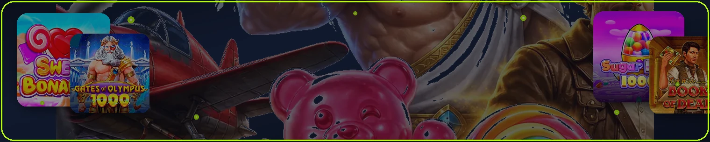
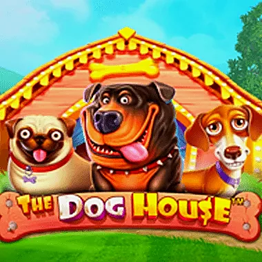
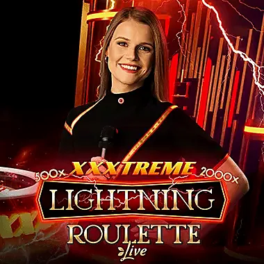
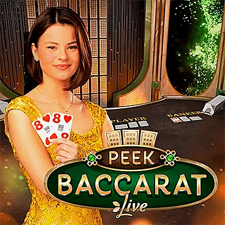
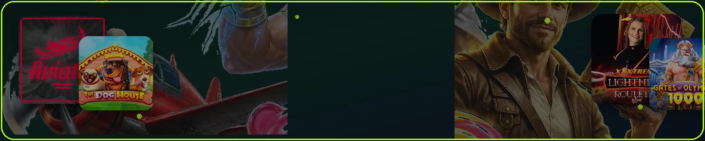

FairPari crash o'yinlar — Aviator va tez raundlar
Qisqa raundlar, o'z vaqtida chiqish va UZS balans — crash bo'limida.

dawo.uz mustaqil qo'llanmasi — ushbu bo'limda FairPari funksiyalari amaliy tilda tushuntiriladi.
Qisqa raundlar, o'z vaqtida chiqish va UZS balans — crash bo'limida.


4 bosqichli welcome · slotlar

Click · Payme · Humo
Slot, live va crash — yagona UZS profilida

| Bo'lim | Tavsif |
|---|---|
| Video slotlar | 12 000+ — Pragmatic, NetEnt, EGT, Play'n GO |
| Live kazino | Ruletka, blackjack, bakkara, game show |
| RNG stollar | Poker, ruletka, bakkara |
| Instant / crash | Aviator, Plinko va tez raundlar |
Kazino katalogi bir profilda: Humo, Click yoki Payme orqali to'ldirgach slotlar, live stollar yoki crash ga o'ting. Ro'yxatdan o'tish dan keyin demo yoki real UZS rejimi mavjud.





Sakkizta mashhur nom: Pragmatic hitlari, crash va Evolution live
dawo.uz kuzatuvida katalog keng, lekin o'yinchilar ko'pincha shu titullarga qaytadi: Gates of Olympus, Sweet Bonanza, Sugar Rush, The Dog House, Book of Dead hamda Aviator. Live bo'limida ruletka va bakkara yetakchi. Ro'yxatdan o'tgach barchasi UZS balansida ochiladi — batafsil kazino va bonuslar bo'limlarida.

Pragmatic Play

Pragmatic Play

Pragmatic Play

Pragmatic Play

Evolution

Evolution

Spribe
Play'n GO
Prematch, live va ekspress
FairPari sport bo'limi futbol, tennis, basketbol, voleybol, xokkey, kibersport, boks, MMA va boshqa yo'nalishlarni qamrab oladi. Jami 53 sport kategoriyasi — bu prematch va live bozorlar soni.
Liniya chuqurligi liga darajasiga bog'liq: Premier League, La Liga, Serie A, Bundesliga, O'zbekiston Superligasi va xalqaro turnirlar keng qamrovda.
| Ko'rsatkich | Tavsif |
|---|---|
| Futbol | eng chuqur liniya |
| Kibersport | CS2, Dota 2 |
Koeffitsientlar bozor o'zgarishiga qarab yangilanadi; live da tezroq.
Prematch — voqea boshlanishidan oldin; ko'proq vaqt tahlil uchun. Live — voqea davomida; koeffitsientlar gol, kartochka va boshqa hodisalarga reaksiya qiladi.
Live stavkada kechikish (delay) 1–5 soniya bo'lishi mumkin — bu sport tikishda standart. Video translyatsiya ayrim o'yinlarda mavjud — akkaunt va balans talab qilinishi mumkin.
| Ko'rsatkich | Tavsif |
|---|---|
| Prematch | oldindan |
| Live | real vaqt |
| Ekspress | kombinatsiya |
| Video | tanlangan matchlar |
| Kechikish | 1–5 s |
Kombinatsiya (ekspress) — bir nechta voqea bir kuponda; umumiy koeffitsient ko'paytiriladi.
Sport welcome 1 400 000 UZS gacha, 100% birinchi depozit. Wagering ×5 faqat ekspress stavkalarda: minimum 3 voqea, har bir koeffitsient ≥ 1.40.
Bitta voqea (ordinar) stavkalar welcome wageringga hisoblanmasligi mumkin. Bonus muddati va minimal depozit promo qoidalarida.
| Ko'rsatkich | Tavsif |
|---|---|
| 1 400 000 UZS sport welcome | Yangi o'yinchilar paketi — kazino yoki sport tanlovi |
| ×5 wagering ekspress | Bonus aylanmasi — kazino ×35, sport ×5 |
| Forma qiymati | asosiy |
Marketing banner 5 600 000 UZS — forma qiymati 1 400 000 UZS ustuvor.
Asosiy bozorlar: 1X2, ikki tomonlama imkoniyat, total (over/under), fora (handicap), to'g'ri hisob, birinchi golchi.
Yevropa top ligalari va Chempionlar Ligasi eng ko'p bozorlarga ega. O'zbekiston Superligasi va kubok o'yinlari ham liniyada.
| Ko'rsatkich | Tavsif |
|---|---|
| 1X2 | g'olib |
| Total | gol soni |
| Fora | handicap |
| HT/FT | birinchi/ikkinchi taym |
Statistika: form jadvali, o'zaro uchrashuvlar, jarohatlar — tahlil uchun. Hech qanday tahlil garantiya bermaydi.

Tennis: match g'olibi, set hisobi, total gemlar. Grand Slam va ATP/WTA to'liq qamrov.
Basketbol: NBA, Evroliga, spread va total pointlar. Voleybol va xokkey — set/game bozorlari.
| Ko'rsatkich | Tavsif |
|---|---|
| Tennis | ATP/WTA |
| NBA | spread/total |
| Kibersport | CS2, Dota 2 |
| Voleybol | set bozorlari |
| Xokkey | NHL, KHL |
Kibersport: CS2, Dota 2 major turnirlari; live koeffitsientlar tez o'zgaradi.
Faol sport o'yinchilari uchun haftalik 3% cashback — stavka hajmiga bog'liq. Hisoblash va to'lash kunlari promo qoidalarida.
Cashback sport bo'limidagi yo'qotishlarni qisman kompensatsiya qilish uchun; foiz va minimal hajm o'zgarishi mumkin.
Cash out mavjudligi voqea va bozorga bog'liq. Voqea oldin kuponni yopish — kichikroq yutuq yoki yo'qotishni cheklash.
Stavka sug'urtasi (akciya) ba'zi matchlarda — bitta voqea yutqazsa ham kupon yutadi. Shartlar aksiya davrida e'lon qilinadi.
| Ko'rsatkich | Tavsif |
|---|---|
| Cash out | vaqtida yopish |
| Sug'urta | aksiya davri |
| Mavjudlik | voqeaga bog'liq |
Budjet belgilang; emotsional qarorlardan saqlaning. Live stavkada tez qaror xavfli.
18+; qimor qaramlik tug'dirishi mumkin. Depozit limitidan foydalaning.
| Ko'rsatkich | Tavsif |
|---|---|
| Live | ehtiyotkorlik |
| Yordam | qo'llab-quvvatlash |

O'nlik (decimal) koeffitsient O'zbekistonda keng: 2.00 = stavka x2 yutuq. Implied probability = 1/koeffitsient.
Amerika va britan formatlari ba'zi bozorlarda mavjud; sozlamalardan o'nlikka o'tkazing.
Koeffitsient o'zgarishi: prematch da tikilgan stavka odatda o'sha koeffitsientda qoladi; live da qabul vaqtidagi koeffitsient.
Ikki favorit ekspress — past umumiy koeffitsient, yuqoriroq ehtimollik. To'rt voqea underdog — yuqori koeffitsient, past ehtimollik.
Korrelyatsiya: bir o'yinda total va g'olib bog'liq — ba'zi platformalar bir kuponda cheklaydi.
Sport welcome wagering uchun faqat 3+ voqea, 1.40+ ekspress hisoblanadi.
Live da tez qaror — gol keyin darhol stavka emotsional. Oldindan limit belgilang.
Kechikish 1–5 soniya — koeffitsient allaqachon o'zgargan bo'lishi mumkin.
Video translyatsiya bo'lmasa — statistik paneldan foydalaning.
Virtual sport — kompyuter simulyatsiyasi, qisqa raundlar. E-sport — haqiqiy professional o'yinchilar.
FairPari da ikkalasi ham liniyada bo'lishi mumkin; bozorlar alohida.
Virtual sport RNG asosida — haqiqiy sport tahlilidan farq qiladi.

xG (expected goals) futbol tahlilida; form jadvali oxirgi 5 o'yin. Jarohatlar ro'yxati kalit o'yinchilar.
Hech qanday statistik model garantiya bermaydi — bu faqat ma'lumot.
Bankroll management: bir stavkada bankrollning 1–5% dan oshmang.
Sport stavka, bukmeker, liniya, live stavka, ekspress, koeffitsient, prematch, futbol stavka, tennis, basketbol, kibersport, cash out, sport bonus, UZS stavka, O'zbekiston sport.
FairPari 53 sport turi va mahalliy UZS hisob bilan O'zbekiston bukmeker bozorida raqobatbardosh.
Premier League va La Liga o'yinlarida liniya eng chuqur — burchak, kartochka, individual shot bozorlari. Kichik ligalarda faqat 1X2 va total bo'lishi mumkin.
Derbi o'yinlarida koeffitsientlar tebranadi — emotsional stavkadan saqlaning. Xalqaro pauzadan keyin form jadvalini yangilang.
O'zbekiston Superligasi — mahalliy bilim ustunlik beradi; saytda liniya mavjudligini match kunida tekshiring.
Tennisda set stavkasi — match stavkasidan past risk ba'zi hollarda. Ikkinchi setda momentum o'zgarishi live da foydalanish mumkin — tajriba talab qiladi.
NBA spread: favorit -7.5 — 7 ochkodan ko'p yutishi kerak. Total 220.5 — umumiy ochkolar.
Voleybol 5 set — set handikap va total setlar.

Flat staking — har stavkada bir xil summa (masalan bankrollning 2%). Kelly criterion tajribalilar uchun — hisob kitob kerak.
Kunlik yo'qotish limiti — masalan 5 ta stavka yutqazilsa to'xtash. Emotsional «quvish» eng katta xato.
| Ko'rsatkich | Tavsif |
|---|---|
| Ekspress reja | Kamida 3 hodisa, har biri kf. ≥ 1.40 |
| Wagering ekspress | Bonus aylanmasi — kazino ×35, sport ×5 |
Sport welcome wagering — faqat rejalashtirilgan ekspresslar; ordinarga vaqt sarflamang agar hisoblanmasa.
Video mavjud bo'lsa — koeffitsient va voqeyni bir vaqtda kuzating. Video yo'q — statistika panel yetarli bo'lishi mumkin.
Live stavkada kechikish — gol ko'rganingizdan keyin stavka allaqachon yangi koeffitsientda qabul qilinadi.
Cash out mavjud bo'lsa — kichik foyda yoki zararni cheklash uchun; mavjudlik voqeyaga bog'liq.
FairPari sport 53 tur, UZS stavka va 1 400 000 UZS welcome bilan O'zbekiston bukmeker bozorida raqobatbardosh. Haftalik 3% cashback qo'shimcha.
18+; mas'uliyatli stavka — budjet va stop-loss. Hech qanday «kafolatli» strategiya yo'q.
| Ko'rsatkich | Tavsif |
|---|---|
| 1.4M welcome | Yangi o'yinchilar paketi — kazino yoki sport tanlovi |
| 3% cashback | VIP daraja va haftalik sport qaytarish |
Professional stavkachilar liniyani bir nechta bookmakerda solishtiradi; FairPari da ham koeffitsientlar voqea yaqinlashganda o'zgaradi. Erta stavka — yuqori koeffitsient, lekin kamroq ma'lumot; kech stavka — aksincha.
Niche bozorlar (burchak, sariq kartochka) ba'zan value beradi — lekin bu chuqur sport bilimi talab qiladi. Asosiy bozorlar (1X2, total) likvidligi yuqori — katta stavkalar qabul qilinadi.
O'zbekiston ligasi o'yinlarida mahalliy media va ijtimoiy tarmoq yangiliklarini kuzatish — jarohat va saf tuzilishi haqida tez ma'lumot.
Hech qanday «fixed match» vaqtincha kafolat bermaydi — firibgarlardan saqlaning.

Ekspress — barcha voqealar yutishi kerak; bitta yo'qotish butun kuponni yo'q qiladi. Sistem stavka (agar mavjud) — ba'zi voqealar yutqazsa ham qisman to'lov.
Tizim stavka 2/3, 3/4 formatlarida — kombinatsiyalar soni ko'payadi; stavka summasi bo'linadi.
| Ko'rsatkich | Tavsif |
|---|---|
| Ekspress risk | Kamida 3 hodisa, har biri kf. ≥ 1.40 |
| Welcome faqat ekspress | Yangi o'yinchilar paketi — kazino yoki sport tanlovi |
Sport welcome wagering faqat ekspress uchun — ordinarga vaqt sarflamang agar hisoblanmasligi aniq bo'lsa.
Korrelyatsiyali voqealar (bir o'yinda total va g'olib) ba'zi kuponlarda taqiqlanadi.
Rasmiy liga saytlari, Transfermarkt (futbol), ATP/WTA (tennis) — ishonchli statistika. Ijtimoiy tarmoq klub akkountlari — jarohat yangiliklari.
xG modellari futbolda kutilgan gollarni beradi — haqiqiy gol bilan solishtirish qimmatli tahlil.
Statistika yordamchi vosita — kafolat emas. O'z tahlilingiz va limitlaringiz bilan birlashtiring.
Live statistika paneli FairPari da match ichida — possession, shots, corners.
Qancha sport turi? — 53. Live bormi? — Ha, prematch bilan birga. Ekspress qoidalari? — Welcome uchun min 3 voqea, koeff. 1.40+.
Cash out har doim bormi? — Voqeaga bog'liq. O'zbekiston ligasi? — Liniyada tekshiring.
| Ko'rsatkich | Tavsif |
|---|---|
| Live prematch | Evolution studiyasi — HD translyatsiya |
| Ekspress qoida | Kamida 3 hodisa, har biri kf. ≥ 1.40 |
| 3% cashback | VIP daraja va haftalik sport qaytarish |
Statistika bormi? — Tanlangan matchlarda panel. Video? — Ba'zi o'yinlarda, balans talab qilinishi mumkin.
Sport cashback? — Haftalik 3% faol stavkachilar uchun.
CS2 va Dota 2 major turnirlari yuqori likvidlikka ega; koeffitsientlar tez o'zgaradi live da.
Virtual sport RNG asosida — qisqa raundlar, 24/7 jadval. Haqiqiy sport tahlilidan farq qiladi.
Kiber sportda patch va roster o'zgarishi natijaga ta'sir — yangiliklarni kuzating.
Bankroll kiber sportda ham 1–5% qoidasi amal qiladi.

O'zbekiston Superligasi va kubok o'yinlarida mahalliy bilim — ob-havo, maydon, safdagi yo'qotishlar — koeffitsientdan tashqari omil. Xalqaro ligalarda xG va form jadvali kuchliroq signal.
Derbi va shaxsiy duel o'yinlari emotsional — stavka oldidan byudjet limitini eslang. Live da gol keyin koeffitsient tez o'zgaradi; shoshilmaslik kerak.
| Ko'rsatkich | Tavsif |
|---|---|
| Live tez | Evolution studiyasi — HD translyatsiya |
| Ekspress reja | Kamida 3 hodisa, har biri kf. ≥ 1.40 |
Ekspressda bir xil liga o'yinlarini aralashtirish korrelyatsiyani kamaytirishi mumkin — lekin kafolat yo'q.
Sport welcome wagering faqat rejalashtirilgan ekspresslar bilan — ordinarga vaqt sarflamang.
Ushbu qo'llanma FairPari platformasi bo'yicha tekshirilgan faktlar va amaliy tavsiyalarni jamlaydi. Raqamlar va shartlar 2026-yil iyun holatiga mos; har doim akkauntingizdagi PROMO bo'limini tekshiring — aksiyalar tez o'zgarishi mumkin.
O'zbekiston o'yinchilari uchun UZS hisob, Humo, Uzcard, Click, Payme va kripto tanlovi katta qulaylik. Mobil APK va iOS PWA orqali istalgan vaqtda kirish mumkin.
Promo kod fa_1635, welcome bonuslar, wagering qoidalari va KYC jarayoni oldindan rejalashtirilsa — tajriba silliqroq bo'ladi.
18+ mas'uliyat bilan o'ynang; depozit limiti va o'zini cheklash vositalaridan foydalaning. Savollar bo'lsa — qo'llab-quvvatlash chat 24/7.
© 2026 dawo.uz — mustaqil FairPari qo'llanmasi. 18+.